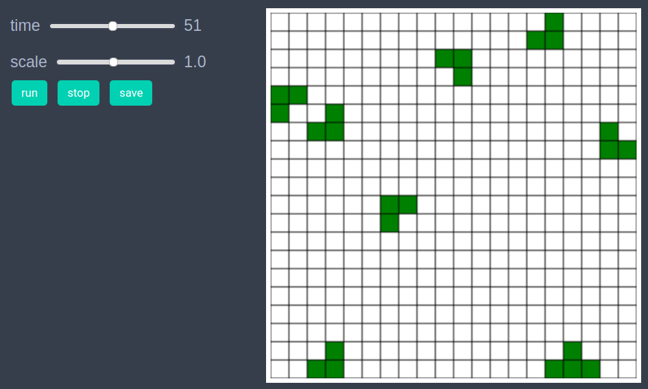
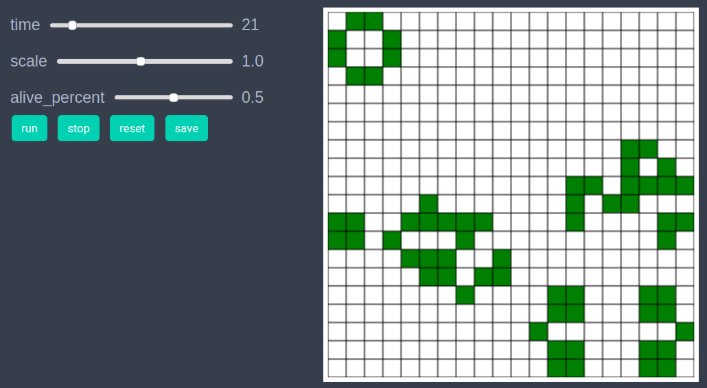
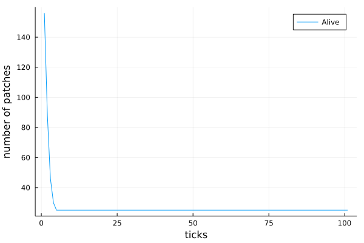

Conway's Game of Life
using EasyABMStep 1: Create Agents and Model
We work with only patches in this model. The size of the grid in the model created is 20x20 and alive_percent is the fraction of patches that are live initially.
model = create_2d_model(size = (20,20), alive_percent = 0.4)Step 2: Initialise the model
In the second step we initialise the patches by defining initialiser! function and sending it as an argument to init_model!. In the initialiser! function we randomly set patches to be either of color :green or :white. The patches with green color have their is_alive property set to true and the patches with white color have their is_alive property set to false. We specify the patch properties color and is_alive that we want to be recorded during time evolution in the props_to_record argument to the init_model! function.
function initialiser!(model)
for j in 1:model.size[2]
for i in 1:model.size[1]
if rand()<model.parameters.alive_percent
model.patches[i,j].color = :green
model.patches[i,j].is_alive = true
else
model.patches[i,j].color = :white
model.patches[i,j].is_alive = false
end
end
end
end
init_model!(model, initialiser = initialiser!,
props_to_record=Dict("patches"=>[:color, :is_alive]))Step 3: Run the model
In this step we implement the step logic of the Conway's Game of Life in the step_rule! function and run the model for 100 steps. Since Conway's model requires all patches to be updated at the same time, in the step_rule! function we first compute the is_alive property for all patches and then apply it to patches.
function calculate_vals(model)
vals = [false for i in 1:model.size[1], j in 1:model.size[2]]
for j in 1:model.size[2]
for i in 1:model.size[1]
patch = model.patches[i,j]
nbrs = neighbor_patches((i,j), model, 1)
num_alive = 0
for nbr in nbrs
num_alive+= model.patches[nbr...].is_alive
end
condition1 = patch.is_alive && ((num_alive == 2) || (num_alive == 3))
condition2 = patch.is_alive && (num_alive == 3)
if condition1 || condition2
vals[i,j] = true
end
end
end
return vals
end
function apply_vals!(model, vals)
for j in 1:model.size[2]
for i in 1:model.size[1]
is_alive = vals[i,j]
model.patches[i,j].is_alive = is_alive
model.patches[i,j].color = is_alive ? :green : :white
end
end
end
function step_rule!(model)
vals = calculate_vals(model)
apply_vals!(model, vals)
end
run_model!(model, steps=100, step_rule = step_rule! )In order to draw the model at a specific frame, say 4th, one can use draw_frame(model, frame = 4, show_grid=true). If one wants to see the animation of the model run, it can be done as
animate_sim(model, show_grid=true)
After defining the step_rule! function we can also choose to create an interactive application (which currently works in Jupyter with WebIO installation) as
create_interactive_app(model, initialiser= initialiser!,
step_rule= step_rule!,
model_controls=[
(:alive_percent, :s, 0:0.01:1.0)
],
frames=200, show_grid=true) 
Step 4: Fetch Data
We can fetch the data of number alive patches as follows.
df = get_nums_patches(model, patch-> patch.is_alive, labels=["Alive"],
plot_result = true)